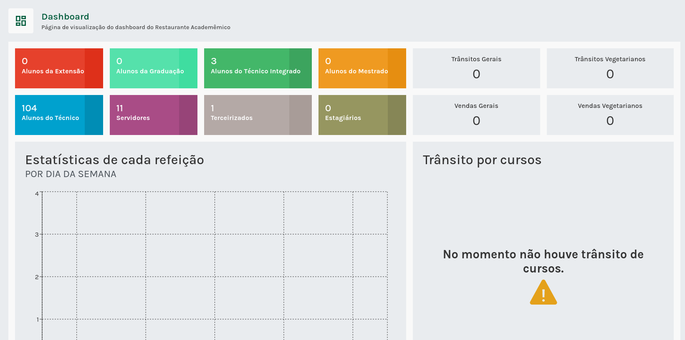
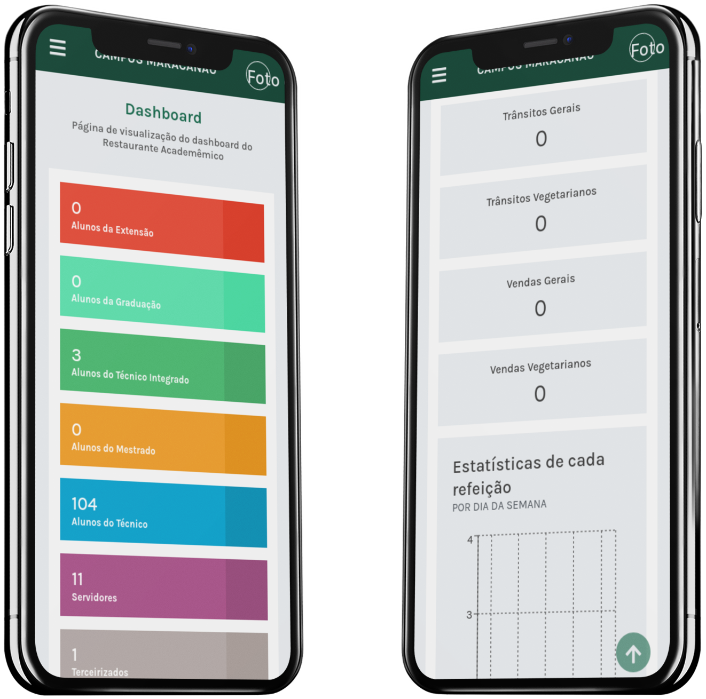

O Total Controle do restaurante da sua escola!

Benefícios
- Controle de estoques e distribuição automatizada
- Teste de aceitabilidade


DIGITALIZAMOS CANTINAS ESCOLARES EM TODO BRASIL
+100
ESCOLAS
+30000
ALUNOS